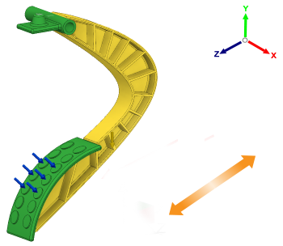

Orients the casting in the center of the die in the direction parallel to the Z axis of the triad.
The ejection direction buttons enable you to set mold opening directions for a die casting operation. The mold opening direction is oriented with reference to the Global Coordinate System.
|
 |
NOTE: You can select more than one mold opening direction for a single die casting configuration.